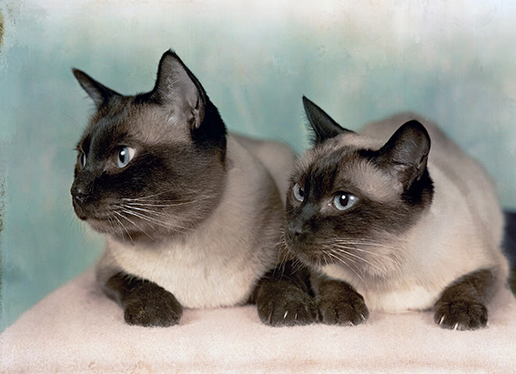
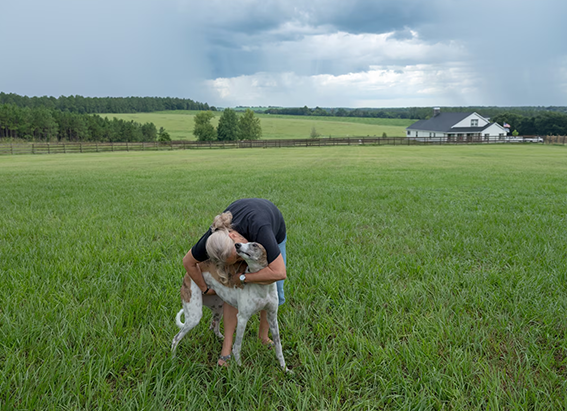

NATIONAL GEOGRAPHIC
Some dogs are geniuses just like humans
ANIMAL
Many of us like to think our dogs are smart, as we point to their ability to read our facial expressions and understand what we say. But some dogs are exceptional. Take Chaser, an American border collie dubbed the “smartest dog in the world,” who could recognize and remember 1,022 nouns one for each of her toys
In Germany, another border collie, a male named Rico, practiced “fast-mapping,” or figuring out the names of new things with the speed and acumen of a three year old child. A handful of other border collies—as well as two Yorkshire terriers, one from Brazil named Vicky Nina, the other an American pooch, Bailey have been found to be similarly talented.
Yet such examples of canine genius are often “about only one dog,” says Claudia Fugazza, an ethologist who studies dog cognition at Budapest’s Eotvos Lorand University. “There has never been a decent sample size,” she notes.
So Fugazza set out to fix that. She and her colleagues with the university’s Family Dog Project asked owners of 34 pet dogs of various breeds to teach their canines names for two separate toys.
Out of those 34 animals, only one dog passed the test—a border collie named Oliva. These results “mean talent must be something special,” says Fugazza, lead author of a new study on the experiment, published recently in Scientific Reports.
The origin of talent
The scientists recruited dog owners worldwide via social media, then asked them to play fetch with their dogs daily in their homes while repeating the name of the toy, a process that lasted three months.
Once a month, with a scientist present, the owners tested the dogs the study participants included both adults and puppies by asking the canine to retrieve one of two toys by name. Dogs that succeeded were then given a new toy and new name to learn.
Despite the intensive training, only Oliva learned to match a single word to a toy in fact, she learned 21 names in two months, though she died from health issues she’d suffered since a puppy before she could be tested further.
“None of the breeds learned a thing. It was such a surprise,” Fugazza says. To verify the study design worked, the scientists also tested six border collies that could already retrieve some toys by name; as predicted, all six of those control dogs learned additional names.
It’s interesting that 18 of the 33 dogs that failed the test were also border collies, Fugazza points out, showing that the breed isn’t always high performing. Because such individual variation in intelligence also occurs in people, dogs could provide insight into what makes an animal gifted and talented, she says.
“A handful of talented people have changed the course of history,” she says. “Why are there so few Mozarts and Einsteins? Is it genetics, the environment, or practice? We think dogs can be used as a model to study the origin of talent.” To explore that question, the scientists next plan to track the genetics and history of a variety of dog breeds to try to identify the factors that produce such smart creatures.
Many researchers believe that border collies are likely so attuned to learning names because they were bred to herd sheep, which requires paying close attention to herders’ whistles and verbal cues.
Comments :
- john Very good
- john Very good
Leave a Reply
Your email address will not be published. Required fields are marked*
Related posts:
-
How Siamese cats change their colors
Most of us, though, can pick out a Siamese cat. Known for their dark eye masks, socks, and tail called “points” that stand out against their cream colored bodies and sparkling blue eyes, the Siamese is one of the world’s easily recognized breeds.
View article -
Now we know how tabby cats get their stripes
Of the nearly 60 million pet cats in the United States, one of the most common is the classic tabby a coat pattern that features stripes, dots, and swirls and what looks like an M imprinted on the cat’s forehead.
View article -
Inside the growing U.S. movement to breed healthier, friendlier dogs
Laura Sharkey breeds mixed-breed dogs, but they’re not goldendoodles, chiweenies , pomskys, or any other designer crosses. She doesn’t even aim for a specific build, size, or coat. “I’m not concerned with what they look like,” she says of her puppies.
View article